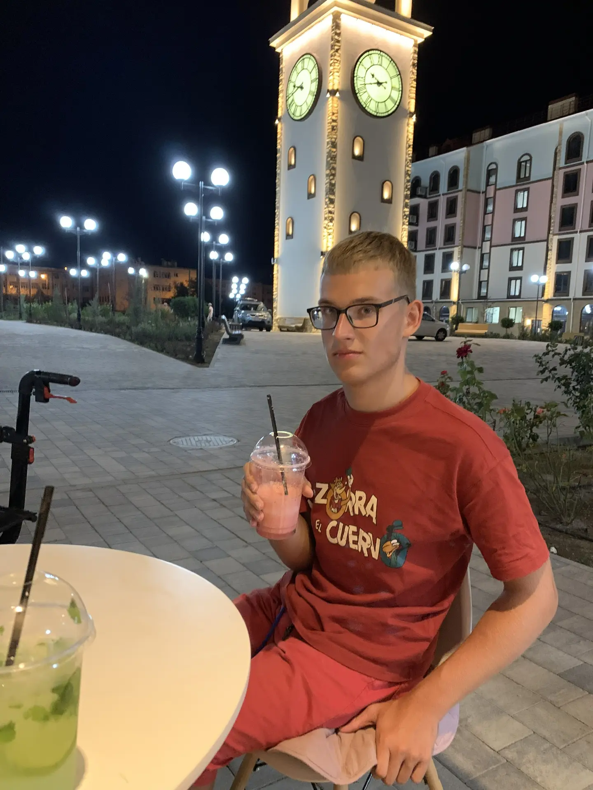

Кто я такой?
Линин Антон
📅 Дата рождения: 30 января 2006 года
📍 Место рождения: г. Малоярославец
👨👩👧👦 Я вырос в полной семье, где ценились знания и творчество. Моя мама — врач. У меня есть старший брат, который закончил МАДИ, а сейчас работает начальником участка в «Криофрост инженеринг».
💻 Вместе с братом мы играли в компьютерные игры, он меня много чему научил. Именно благодаря общению с братом, я понял насколько интересным может быть удивительный мир информационных технологий.
🎓 Обучаюсь в КАИТ №20 по специальности "Информационные системы и программирование".

Мои увлечения
🏊 Плавание
🐴 Верховая езда
🍄 Грибы и ягоды
🎨 Рисование
🎬 Кино и театры
🌊 Путешествия
Личные качества
✅ Положительные
- Добрый
- Готов прийти на помощь
- Аккуратный
- Не поддаюсь чужому влиянию
- Жертвенный
⚠️ Отрицательные
- Властный
- Слишком серьёзный
- Слишком люблю анализировать